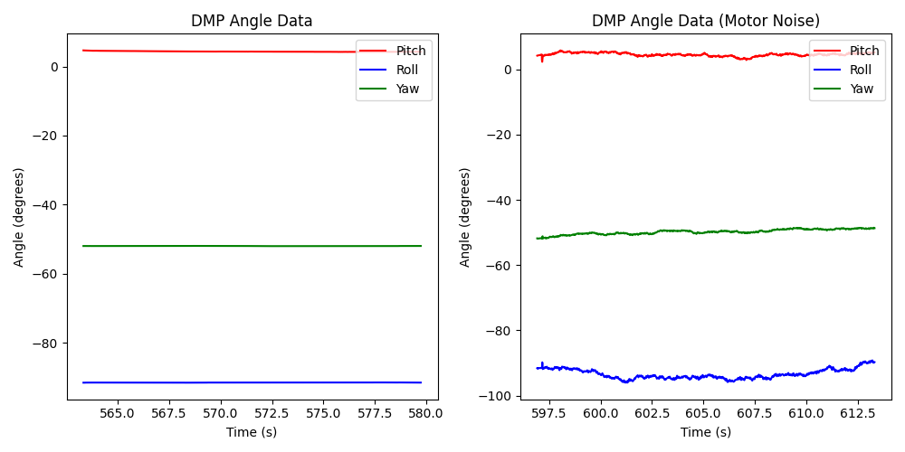
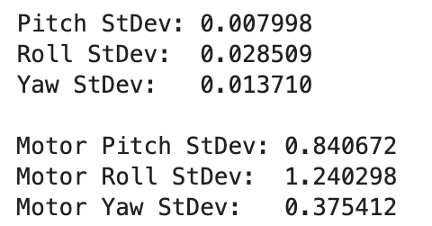
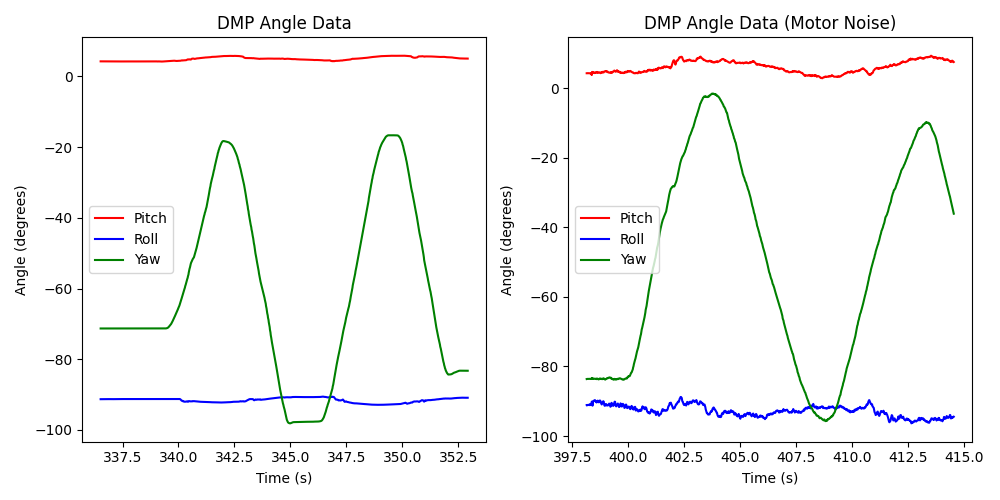
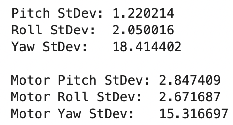
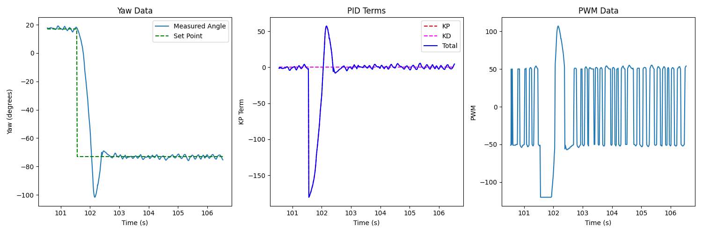
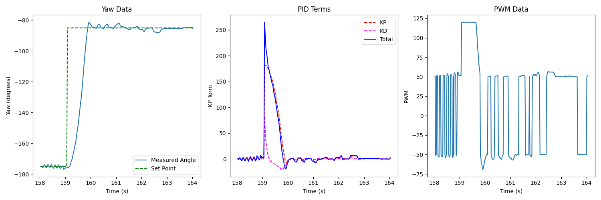
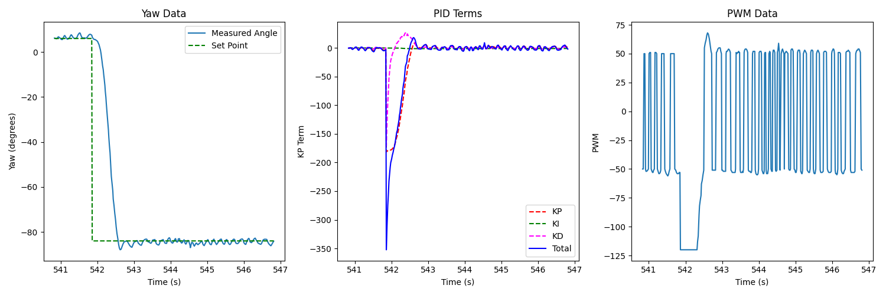
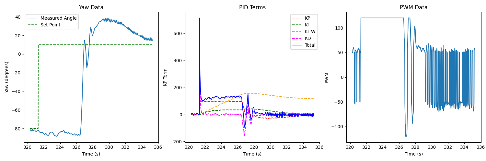

Lab 6: Orientation Control
After demonstrating success with PID control with lateral movement, we can also use it to control our orientation angle.
Prelab
Last lab proved how invaluable having data logging and transmission was
in debugging, so I set up a similar system for this lab (recording
angles instead of distance). Much of the code is the same from
Lab 5: PID Control; I defined a function log_pid_data to log various
pieces of data for debugging (noting that we’d be recording yaw):
void log_pid_data( int time, bool data_ready, double angle, float kp_term,
float ki_term, float windup_term, float kd_term,
int total_term, int motor_pwm )
{
if ( entry_idx < NUM_ENTRIES ) {
time_entries[entry_idx] = time;
data_ready_entries[entry_idx] = data_ready;
yaw_entries[entry_idx] = angle;
kp_term_entries[entry_idx] = kp_term;
ki_term_entries[entry_idx] = ki_term;
windup_term_entries[entry_idx] = windup_term;
kd_term_entries[entry_idx] = kd_term;
total_term_entries[entry_idx] = total_term;
motor_pwm_entries[entry_idx] = motor_pwm;
entry_idx += 1;
}
}
The GET_PID_DATA BLE command would transmit this data:
// Case statement from within handle_command()
case GET_PID_DATA:
Serial.printf("Getting data...\n");
for ( int i = 0; i < entry_idx; i++ ) {
tx_estring_value.clear();
tx_estring_value.append( time_entries[i] );
tx_estring_value.append( "|" );
tx_estring_value.append( (int) data_ready_entries[i] );
tx_estring_value.append( "|" );
tx_estring_value.append( yaw_entries[i] );
tx_estring_value.append( "|" );
tx_estring_value.append( kp_term_entries[i] );
tx_estring_value.append( "|" );
tx_estring_value.append( ki_term_entries[i] );
tx_estring_value.append( "|" );
tx_estring_value.append( windup_term_entries[i] );
tx_estring_value.append( "|" );
tx_estring_value.append( kd_term_entries[i] );
tx_estring_value.append( "|" );
tx_estring_value.append( total_term_entries[i] );
tx_estring_value.append( "|" );
tx_estring_value.append( motor_pwm_entries[i] );
tx_characteristic_string.writeValue( tx_estring_value.c_str() );
}
break;
This would finally be parsed by our Python notification handler; below
is an example of using the GET_PID_DATA command from Python, using
the notification handler to parse and record data:
data_time = []
data_ready = []
data_yaw = []
data_kp_term = []
data_ki_term = []
data_windup_term = []
data_kd_term = []
data_total_term = []
data_motor_pwm = []
def parse_data( data: str ):
data_components = data.split("|")
time = (float(data_components[0]) / 1000)
ready = bool(int(data_components[1]))
angle = int(data_components[2])
kp_term = int(data_components[3])
ki_term = int(data_components[4])
windup_term = int(data_components[5])
kd_term = int(data_components[6])
total_term = int(data_components[7])
motor_pwm = int(data_components[8])
return time, ready, angle, kp_term, ki_term, windup_term, kd_term, total_term, motor_pwm
def data_handler(_uid, response):
global i
time, ready, angle, kp_term, ki_term, windup_term, kd_term, total_term, motor_pwm = parse_data(response.decode())
data_time.append(time)
data_ready.append(ready)
data_yaw.append(angle)
data_kp_term.append(kp_term)
data_ki_term.append(ki_term)
data_windup_term.append(windup_term)
data_kd_term.append(kd_term)
data_total_term.append(total_term)
data_motor_pwm.append(motor_pwm)
i = i + 1
print(f"{i * 100 / NUM_SAMPLES:.2f}% done", end = '\r')
ble.start_notify(ble.uuid['RX_STRING'], data_handler)
ble.send_command(CMD.GET_PID_DATA, "")
This allowed us to have high visibility into the system and investigate particular terms to debug along the PID control process.
Digital Motion Processing (DMP)
Part of the challenge of using IMU data is combining the various sensor
readings into a single one, which ideally reduces the noise from the
accelerometer and the drift from the gyroscope. To aid in this, I
used the Artemis’ built-in Digital Motion Processing (DMP) system, which
combined the measurements for us. Following the provided tutorial, I
abstracted the interface to simple functions, seen in the dmp.h
header file:
// =======================================================================
// dmp.h
// =======================================================================
// Declarations for the car functions
#ifndef DMP_H
#define DMP_H
#include "ICM_20948.h"
typedef struct {
double angle;
bool new_data;
} dmp_msg_t;
class DMP {
public:
DMP( ICM_20948_I2C* ICM ) : icm( ICM ), new_data( false ) {};
void begin(); // Call after initializing IMU
void update(); // Update from the FIFO - call continuously
// Compute values when needed
dmp_msg_t roll();
dmp_msg_t pitch();
dmp_msg_t yaw();
private:
ICM_20948_I2C* icm;
double qw, qx, qy, qz;
bool new_data;
};
#endif // DMP_H
One implementation detail is that the DMP buffer can fill up; to address
this, the update() function is always called in the main loop, which
updates the internal quaternions with the latest data:
void loop()
{
// Listen for connections
BLEDevice central = BLE.central();
// Always update dmp
dmp.update();
// If a central is connected to the peripheral
if ( central ) {
Serial.print( "Connected to: " );
Serial.println( central.address() );
// While central is connected
while ( central.connected() ) {
// Always update dmp
dmp.update();
// Bluetooth read/write
}
Serial.println( "Disconnected" );
}
}
This ensures that the data FIFO buffer wouldn’t fill up. To avoid
unnecessary latency, angles are only calculated from quaternions when
needed with the pitch(), roll(), and yaw() functions
(following the example code), having the added benefit that they
are oriented correctly for our robot using the magnetometer.
Plotting this data over time while turning the robot (both changing yaw by turning the car, as well as keeping it stationary, with yaw movements introducing noise from me), and comparing to Lab 2: IMU Pose Data, we can see a drastic reduction in noise with minimal drift, indicating a successful fusion of sensor readings (using Python to calculate standard deviations)
Stationary:
 {kind=link}
{kind=link}
Rotating the Car:
 {kind=link}
{kind=link}
Designing the PID Controller
Similar to Lab 5, I integrated the main run_pid_step function (to
update the PID control once) into the main loop, and used the previous
interpolation to linearly extrapolate the angle if new data wasn’t
ready:
void run_pid_step()
{
curr_time = millis();
int curr_angle, curr_total_term, curr_motor_pwm;
float curr_kp_term, curr_ki_term, curr_ki_windup, curr_kd_term;
bool data_ready;
dmp_msg_t dmp_msg = dmp.yaw();
if ( dmp_msg.new_data ) {
// Shift values
last_last_angle = last_angle;
last_last_angle_valid = last_angle_valid;
last_last_angle_time = last_angle_time;
curr_angle = dmp_msg.angle;
last_angle = curr_angle;
last_angle_time = curr_time;
last_angle_valid = true;
data_ready = true;
last_angle_valid = true;
}
else {
// No new data - interpolate
curr_angle = interp_angle();
data_ready = false;
}
if ( last_angle_valid ) {
pid.update( curr_angle );
curr_total_term = pid.get_control();
curr_kp_term = pid.terms.kp_term;
curr_ki_term = pid.terms.ki_term;
curr_ki_windup = pid.terms.ki_windup_term;
curr_kd_term = pid.terms.kd_term;
curr_motor_pwm = pid.scale( curr_total_term );
}
if ( curr_motor_pwm > 30 ) {
car.right( curr_motor_pwm );
}
else if ( curr_motor_pwm < -30 ) {
car.left( -1 * curr_motor_pwm );
}
else {
car.stop();
}
if ( last_angle_valid ) {
log_pid_data( curr_time, data_ready, curr_angle, curr_kp_term,
curr_ki_term, curr_ki_windup, curr_kd_term,
curr_total_term, curr_motor_pwm );
}
}
// in loop...
while ( central.connected() ) {
// Send data over BLE
write_data();
// Read data over BLE
read_data();
if ( run_pid ) { // Set by RUN_PID BLE command
run_pid_step();
if ( curr_time - pid_start_time > 10000 ) {
// Stop for safety
stop_pid();
}
}
}
I had the PID’s setpoint start as the current angle, and used a BLE command to change the setpoint (always opposite the current setpoint sign, to avoid angle overflow):
case SET_SETPOINT:
int new_setpoint;
success = robot_cmd.get_next_value( new_setpoint );
if ( !success ) {
return;
}
if( pid.get_setpoint() > 0 ){
new_setpoint = pid.get_setpoint() - new_setpoint;
} else {
new_setpoint = pid.get_setpoint() + new_setpoint;
}
pid.set_setpoint( new_setpoint );
break;
Similar to Lab 5, I started with only a proportional term; I reused my PID code, and simply set the gains of the others to 0. This resulted in a moderate control system with some overshoot (using \(K_P = 2\))
{kind=link}
Noting the overshoot, I added a derivative term. In an ideal world, I would use the gyroscope output, as this already gives the angular derivative (without giving extra noise from the accelerometer and taking the integral of a derivative measurement). However, doing so with the DMP reduced the sampling rate from the previous maximum from the overall Game Rotation Vector (225KHz) to the maximum of the gyroscope (1125Hz), resulting in a slow system with poor performance. Instead, I integrated the DMP on its own (which was still not too noisy, shown above). This helped reduce the overshoot; I found success with \(K_P = 2, K_D = 0.1\):
{kind=link}
Finally, I incorporated the integral term, although not much was needed, as there wasn’t much constant offset; I ended up using \(K_P = 2, K_I = 0.1, K_D = 0.1\) for my final system, which helped the final value settle close to the set point with minimal oscillations:
{kind=link}
Range/Sampling Time
We can use the same approach as Lab 5 to use whether the data was ready for each update to compute the update frequency (filtering out timestamps when data wasn’t ready):
loop_frequency = (len(data_time) - 1) / (data_time[-1] - data_time[0])
print(f"Loop Frequency: {loop_frequency:>7.2f} Hz")
ready_data_times = []
for i in range(len(data_time)):
if( data_ready[i] ):
ready_data_times.append(data_time[i])
data_frequency = (len(ready_data_times) - 1) / (ready_data_times[-1] - ready_data_times[0])
print(f"Data Frequency: {data_frequency:>7.2f} Hz")
print(f"Missing Entries: {len(data_time) - len(ready_data_times)} / {len(data_time)}")
{kind=link}
Here, we can see that the full-speed DMP is able to keep up with our loop, (much more than the Lab 5 ToF sensors), only missing a few entries.
[ECE 5160] Integrator Windup
Finally, we want to make sure that our integrator doesn’t “wind up” and accumulate when it doesn’t affect the output. This is done similarly to Lab 5, where we clamp the integrator when the output is maximal and integrating would unnecessarily accumulate values:
// In the PID update
int curr_time = micros();
float dt = (float) ( curr_time - last_time );
last_time = curr_time;
// Perform in terms of seconds, like model
if ( !this->clamp( error ) ) {
terms.ki_term += params.ki * ( (float) error ) * dt / 1000000.0;
}
terms.ki_windup_term += params.ki * ( (float) error ) * dt / 1000000.0;
// Defining the clamp function
bool PID::clamp( int error )
{
// Clamp if we're at the maximum control and our error sign matches
return ( ( curr_control > 120 ) || ( curr_control < -120 ) ) &
( error * curr_control > 0 );
}
To demonstrate this, I held the car in the air for the first few seconds; we can see that the unclamped integrator term accumulated a lot, but our clamped version remained small, resulting in some overshoot, but not a harmful amount:
{kind=link}
Acknowledgements
Huge thanks to Nita Kattimani; I experienced issues with my battery late in the lab, but she was able to lend me hers to complete the lab with!